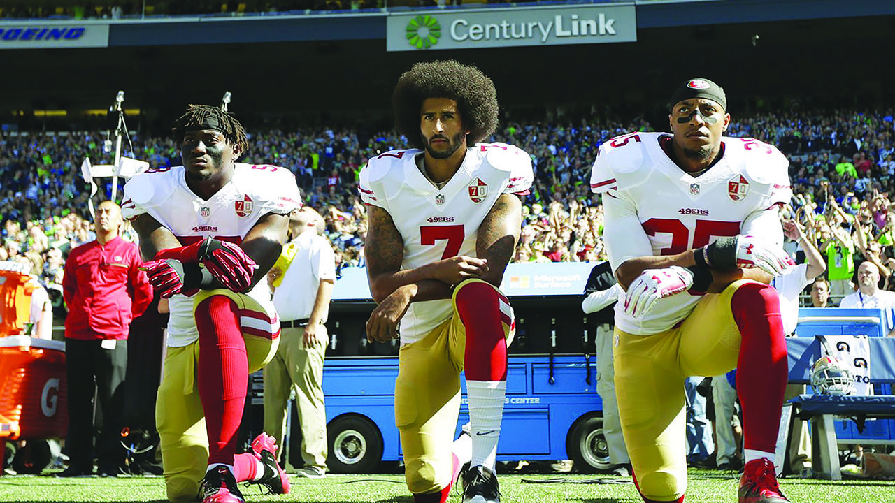

socially unredeeming
The free speech that suits us
Free speech is one of the cornerstones of any successful democracy and, for this reason, it’s not hard to imagine why it ended up as the First Amendment to the US constitution. Said amendment gets misused, abused, and thrown around a lot and, like the Bible, tends to be used by whomever is using it, just to support whatever argument they have. One example of this would be the Indiana baker who claimed religious freedom (The Establishment Clause of the First Amendment) when refusing to bake a cake for a homosexual couple, prepping for their wedding. Now, the end of that story is that the baker won his supreme court cased based on how the case was presented at a local level, but it doesn’t change the fact that he believed that he should be allowed to freely discriminate against others, based on his right to free speech and freedom of expression, as it pertained to his religious beliefs. Some would argue that he should not be forced to provide services to those that act outside of his faith (note that he did not win his case based on this assertion). They would have a point, after all - not a point that I, personally, agree with, mind you, but they would have an argument. On the other side of that argument, some would say that freedom of speech is not freedom to discriminate and if the First Amendment was meant to protect the baker in this scenario, then it could be used by any business owner to refuse service to anyone, based on real or imagined slights against their religion. Another solid point. Two sides of one argument, using the same protections as the basis for said arguments and, unfortunately, our citizenry is so polarized now that you could ask 10 different people which side is right and get 5-5 split in response.
Read more...I already alluded to which side of that argument I fall on, but I will admit that I can see the merits to both sides. In this case; however, I will argue that protecting those who may be discriminated against is more important than protecting someone’s right to discriminate because it makes them uncomfortable. To be clear, my argument is that serving a cake to a gay couple, even if the baker doesn’t agree with their life choices, does not discriminate against or harm the baker and, therefore, the gay couple needs to be protected. At any rate, despite my digression, there’s still an argument to be made for both sides. Okay, my digression aside, this rant is not about bakers and weddings, it’s about free speech. Very specifically, this rant is about peaceful protest, the recent attacks against it, and what I feel is a misinterpretation of the extent of the protections provided by the First Amendment.
Peaceful protest is the backbone of freedom of speech. After dealing with European monarchs and their penchant for decapitating those who spoke out against them, Americans decided to pen a protection for one’s ability to speak freely, so long as they are not harming others (y’see, discrimination is harmful, but I won’t get back on that). We also believe, or at least we used to believe, that if you didn’t like something you saw, you could stand up and say something about it. Again, these actions are protected if they are not going to harm others in the process. This is a very important aspect of our democracy. If politicians get out of hand or if people are being disenfranchised or discriminated against, we can gather and, in solidarity, tell those in charge that we’re not happy about it. Now, this has never come without hardship or consequence, but it is supposed to be protected by our constitution because it is vital to our democracy’s survival. This is the same reason that a free and open press is important – if those in power are controlling what we see and what we say, then we are beholding to them. During this rant, it is important for anyone reading it to remember that our government officials work for us, not the other way around. We have a right to see and say what we will, so long as it causes no harm, because this country is supposed to be by the people, for the people. If we fail to remember that, then we may lose the very protections which are so important and, believe it or not, they’re already being assaulted and have been for a while.
Technically, to the best of my recollection, these assaults really started to ramp up during George W. Bush’s presidency with the “Free Speech Zones” they’d place at his public appearances. I’m not going to get into how absurd that concept was or how absurd it is that we let them get away with it, but I did want to note that this is nothing new. Attacks on free speech are continuing, from the current administration’s daily attacks on the press to the negative light we cast on college campuses gathering in protest, I think we’re all forgetting what it means to live in a free society. Where this is exemplified most, in my opinion, is with the NFL player’s anthem protests. For those of you who have been hibernating for the last two years, players in the NFL started kneeling during the playing of the national anthem before games to call attention to racial injustice in this country. Now, whether or not you believe they’re correct, they do have a right to do it. In return, though, they are accused of being unpatriotic and sons of bitches and, I’m sure, much worse behind closed doors. The idea that someone peacefully protesting is unpatriotic is ridiculous. Quite the opposite, in fact, as I’ve noted throughout this rant. Peaceful protest is the backbone of freedom of speech is a cornerstone of democracy. That’s pretty simple math that adds up to their protests being pretty damn patriotic, especially since there is racial injustice in many areas of the country. We, as a people, should be defending these players for defending our rights and defending a class of people who feel disenfranchised. Instead, they’re being attacked by about half of the population. Again, whether or not you believe what they’re saying, they have the right to say it.
Okay, all that said, there is a flip side to that. Although the players have freedom of speech and should be allowed to protest, they also have to be willing to deal with the consequences. Very few protests are without consequence and, often times, it is the suffered consequences that end up making the fight so remarkable. The NFL players have the right to protest and, as a private organization, the NFL has the right to fine them for it. I, personally, think it’s a bad move on the NFL’s part, but it is its prerogative. Arguing that the NFL doesn’t have the right to fine players for what they’re doing would be like arguing that McDonald’s doesn’t have the right to fire an employee for kneeling outside, in protest of the use of trans fats, for the first 30 minutes of each of their shifts. Yes, the employee has the right to protest, but if McDonald’s tells them they need to stop and they don’t, then McDonald’s has the right to terminate their employment. Now, you may argue that the NFL’s actions are not an extension of free speech, but I would argue that, as a private organization with a public face, they have the right to project the image they wish to, which is an extension of free speech. This is why companies have codes of conduct, dress codes, etc. You don’t have to follow these regulations, but you will have to deal with the consequences.
My point is, even though I don’t agree with the NFL’s actions to fine its players for protesting, we still need defend its right to do so, just as we need to defend the rights of players to protest. As I mentioned in the first paragraph, people are very adept at molding protections and texts to support their arguments and, as such, we need to be careful, as a society, to defend all free speech and not just the free speech that suits us.
Mini Rant
At some point, I fully plan to post mini rants in this space. At this point in time; however, I am focusing on building the site and trying to foster interest to contribute from others. So, if you're reading this, keep in mind that I'd be more than happy to share your party stories, blogs, mini rants, or comics. Simply email me your material at Socially.Unredeeming.Stories@gmail.com, include your desired real or pen name, and let me know if you'd like the content posted as-is or if you'd like me to edit the content for publication.